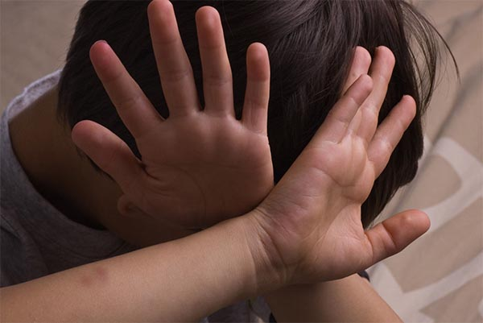

DAMAGED CHILDREN
Damaged children; the role of parenting
Damaged children grow up to become unhealthy adults. If they get their own families, they damage their children – and spouses – as well.
These are some of ways you can tell you are raising damaged children.
As a parent, criticizing your children when they do wrong needs to be sandwiched with praise for the good they do. If a parent only criticizes and never appreciates or appreciates so little, children will grow feeling adequate, not good enough and they end up having self-esteem issues.
Self-esteem does not come with age, it is built by the parent through upbringing and when that is not done, adults have to be deliberate to repair the damage. Adults who lack self-esteem are extremely unhealthy and depend on others for validation. They never feel good enough.
Use of the rod
When a parent uses the rod to discipline a child while angry, the child is damaged. If you have to use the rod to discipline children, calm down and deal with your anger before you handle the child. At that point, you will use the rod for discipline and not to meet your own needs of anger and frustrations.
If you spank a child while angry, you teach them that violence is the way to deal with issues, that when angered, they need to respond in anger and dump it on the other people who did not cause it.
Children who are damaged through spanking are likely to become physically abusive adults. They are likely to struggle with anger issues as adults, anger which they most likely will dump on innocent people including their own children.
Expression of emotions
Parents who do not allow their children to express negative emotions such as anger, frustrations, pain, sadness, etc., they interfere with a child’s development. Angry parents deny their children an opportunity to express their emotions. Such a parent will spank a child and then ask them to be quiet yet that child is in pain. When a child is in pain or is sad, and is asked not to cry, where do they take those emotions?
Some parents will not even allow children to play in the house, just so that the house will remain clean. Some are asked to play indoors so that they do not get dirty outdoors or so that they do not get negatively influenced by the other children.
There are parents who do not allow their children to play with other children in the neighborhood because they feel that those families are not of their class. Children do not understand such image issues and to them children are children.
That is injustice to children and it damages them. Play is a very important way that children express their emotions, just the same way adults do by talking, crying etc. Children who are allowed to express their emotions do not internalize pain and negative emotions and are more productive than those who do not. Parenting children in ways that allow them to express themselves promotes assertiveness as they grow to become adults.
Let children be children
Parents who expect children to behave like adults are damaging the children. When a parent expects a child to make adult decisions, reason like an adult and comfort and offer love to a parent, those are things that can only be done by adults.
When young children cannot play because they are expected to care, feed and babysit their younger ones, those children fail to enjoy their own childhood. They become individuals who do not know how to express themselves even when they feel oppressed.
They may grow to become workaholics because work is what gives them approval. They also may grow to care and work for everyone even at the expense of their own health, wealth or family. They can end up getting into relationships where they are abused, manipulated and taken advantage of. Much as they don’t enjoy to be abused, it is their comfort zone and they are afraid to get out of that comfort zone.
Domestic violence damages children
Parents who expose their children to domestic violence bring up damaged children. Children who grow up in violent homes constantly feel the need to protect the abused parent because this parent is helpless. In reality, it is only an adult that can protect an adult.
When children protect one parent, they are denied the benefits of having both parents protecting them. Besides protection, the children learn violence as a way of resolving conflict and most use the same violence as adults. This becomes a generational trend such that the destructive methods are perceived to be the working methods. It is the only thing they know.
Parenting by remote
This is a situation whereby a parent is not present to listen, nurture and connect with their child. Basically, the child is not parented. Distanced parents tend to be cold with their children. Children often feel lonely and isolated. In this setup parents and children lead very separate lives and there is little feeling of emotional connection. This is very damaging to the children.
The emotional distance causes a situation such that even when parents and children are together, it is as if they are each alone. There is little feeling of nurturance. This kind of parenting makes parents lack emotional connection with their children. It is in such families that children feel closer to relate with friends more than they do with their parents. They easily make decisions based on peer pressure.
You may ask, why is being absent for children a bad thing? And why would we call it damaging especially because one is busy making the children’s lives better?
Parents have a role to play in parenting their children. Children in absent parent families grow up feeling lonely, shy and that they don’t deserve to be loved. They withdraw emotionally because that is the natural thing to do when emotions are not nurtured.
Their emotional withdrawal in turn, makes it difficult for them to connect with others including their own children and spouses, which perpetuates their loneliness. These individuals do not know how to offer time and emotional connection to their spouses or children.
At old age, the emotionally disconnected individuals become alone, lonely and isolated even by their own children and spouses because they did not bond with them over the years.
Perfectionism
Parents who use perfectionism while raising their children damage them. When children do not meet the high standards set for them, they become ashamed and feel unworthy. When these standards are repeated, the child internalizes shame.
This shame when internalized, becomes a state of being which leads to toxic shame. Toxically shamed individuals do not appreciate themselves or any other person. As a result, they work at perfecting everything about them.
Perfecting everything includes attaining many degrees, building their career while neglecting other important areas of life, becoming celebrities, attaining high levels of power, etc.. This does not make them healthy, it helps them cope with the shame within.
Irrespective of how “successful” we imagine them to be, they remain very controlling because shamed individuals thrive in control. Controlling people are abusive by all standards. They are successful in their academic achievements and careers but highly dysfunctional.
Parents play a very important role in determining how their children will turn out. Well-adjusted individuals are the product of well balanced parenting.
By Joan Kirera - Psychologist/ Marriage and Family Therapist.